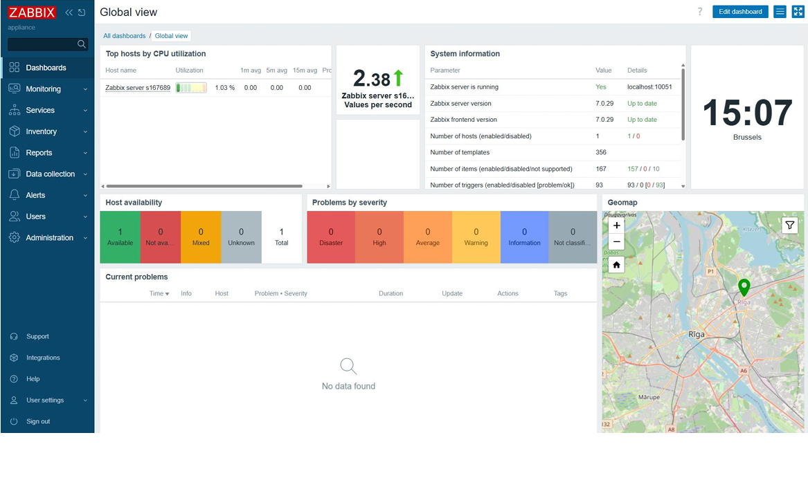
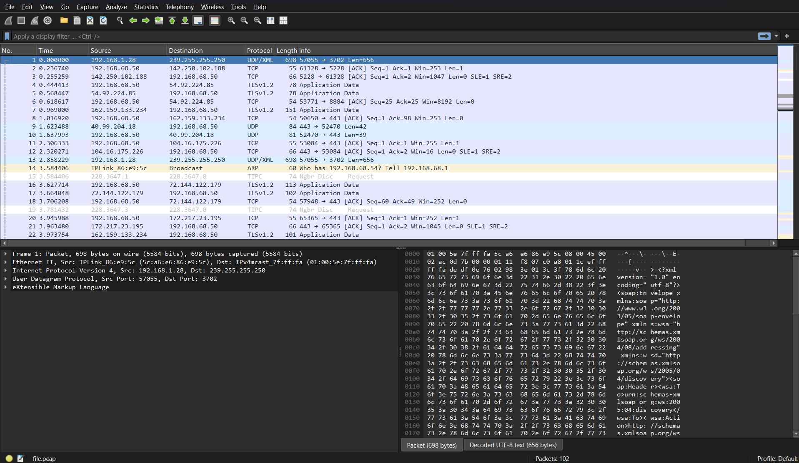
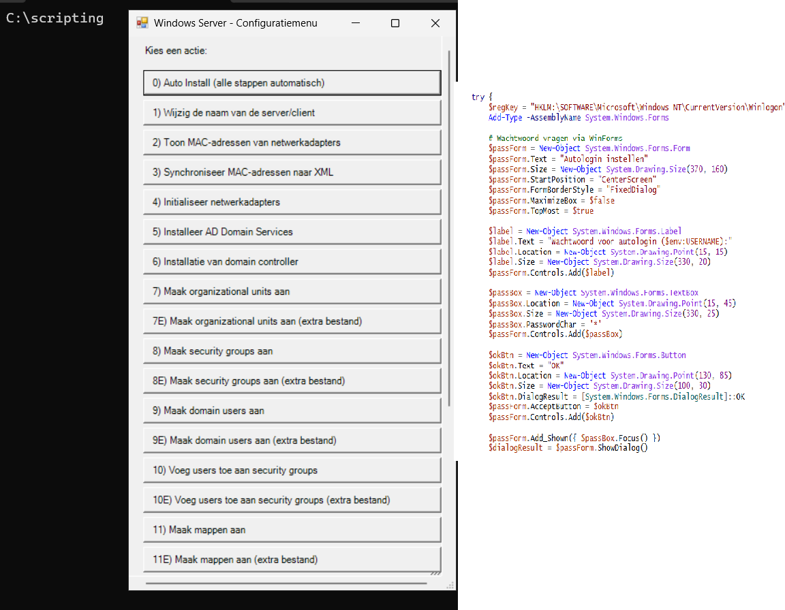

Netwerkmonitoring met Zabbix
Een netwerk opvolgen en bewaken met Zabbix.

Een netwerk opvolgen en bewaken met Zabbix.

Netwerkverkeer onderzoeken en analyseren.

Virtuele machines opzetten en beheren.

webwiz opdracht.

opdracht Topdesign

Windows server en client automatisch instellen door een powershell script